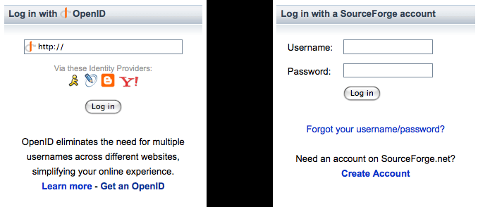
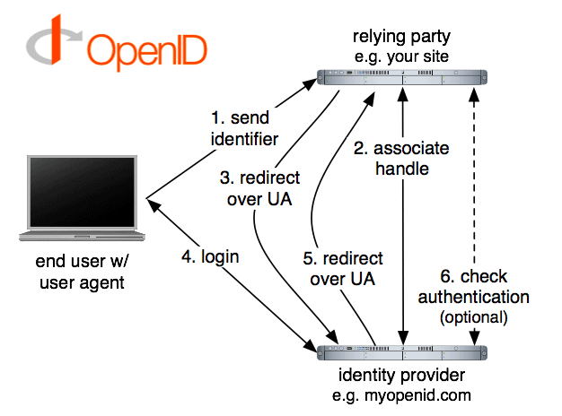

IdM im akademischen Umfeld
Entwicklung und Evaluation eines Pilotsystems mit OpenID
Dennis Blöte
RN-Kolloquium, 09. Mai 2008
Fragerunde
- Wem sagt Identitätsmanagement etwas?
- Wer kennt OpenID?
- Wer hat eine OpenID?
- Wie viele Benutzerkonten braucht man,
um eine Glühbirne einzudrehen?
Problemstellung
Im FB3 gibt es eine Vielzahl verschiedener Benutzerkonten und
Anwendungen, auf die der Zugriff separat verwaltet wird:
- FB3-Accounts (insgesamt ca. 4.000)
- WLAN
- Webmail
- StudIP
- Wikis
- …
Motivation / Warum der FB3 IdM braucht
Durch die Einführung von IdM können wir …
- Single-Sign-On implementieren
- Personen ihre Stammdaten selbst pflegen lassen
- Daten weiteren Anwendungen zur Verfügung stellen
- Situated Software für den FB3 (bspw. Wiki)
- Nutzung der FB3-Identität „nach außen”
Zentrale Anforderungen
Benutzerzentrierte Identität: Der Anwender hat die Kontrolle über
Verwaltung und Schutz der Daten. Er entscheidet …
- wer sein Identity Provider ist
- welcher Relying Party er vertraut
- welche Informationen er austauschen möchte
» vgl. Kim Camerons „Seven Laws of Identity”
Identität und Attribute
Die digitale Identität besteht aus allen verfügbaren
personenbezogenen Daten, den Attributen.
- Stammdaten (Name, Matrikelnummer, E-Mail, …)
- Eigenschaften (ist Student, nimmt an LV teil, …)
- Rechte und Privilegien, bspw:
- Zugriff auf Lehrveranstaltungsplaner
- Zugang zu Lehrmaterialien
- Vergünstigungen durch Studentenstatus
Woher kommen die Attribute?
Zwei verschiedene Architekturansätze:
- Föderierte Identität
- erstreckt sich über mehrere Systeme
- vertrauenswürdige Kreise
- Zentralisierte Identität
- Attribute kommen aus einer Quelle
- In diesem Fall der LDAP-Server des FB3
Authentisierung
Wie verbinden wir die OpenID mit der vorhandenen digitalen Identität?
Lösungsansätze
- Kopplung der OpenID an das FB3-Benutzerkonto
- » Datenaustausch über LDAP
- Eigenständigem System mit IdP-Benutzerkonto
- » Verbindung über die FB3-Mailadresse
Was ist OpenID?
- Single-Sign-On System
- 2005 von Brad Fitzpatrick entwickelt
- offener Standard (aktuell Version 2.0)
- dezentral: Jeder kann Identity Provider sein
- ermöglicht leichtgewichtiges Identitätsmanagement
Login mit OpenID

OpenID nutzt URL als Identifier
OpenID aus technischer Sicht
- Protokoll, um den Besitz einer URL zu prüfen
- Basiert auf HTTP-Requests und Redirects
- Transaktion läuft im Browser des Benutzers ab
- Erweiterungen: SReg, Attribute Exchange, PAPE
Demo
Ablauf des Logins

Warum verwenden wir OpenID?
- offener Standard, daher dezentral
- gute Akzeptanz und zunehmende Verbreitung
- benutzerzentriertes Identitätsmanagement
- Relying Party ist einfach zu implementieren
- Libraries und Referenzimplementierungen
für viele Programmiersprachen vorhanden
- » Situated Software
Evaluation
- Abdeckung der Anwendungsfälle
- Usability des Pilotsystems
- Effektivität
- Effizienz
- Zufriedenheit
- Akzeptanz
- Welche Grenzen gibt es?
Einordnung der Arbeit
- OpenID ist an deutschen HS bislang kein Thema
- » in Amerika hingegen schon
- Hierzulande werden kommerzielle Lösungen eingesetzt
- » ITIM (IBM) oder eCampusII (Novell)
- interessantes Themenfeld, gerade weil OpenID an Akzeptanz gewinnt
Zeitplan
- Beginn: 18. April
- 1. Kolloquium: heute
- Integration des Servers: so bald wie möglich
- 2. Kolloquium: Ende Juni
- Evaluation der Nutzer: Anfang Juli
- IdentityCamp Bremen: 7./8. Juli
- 3. Kolloquium: Anfang August
- Ende: 18. August
Danke für die Aufmerksamkeit!
Fragen und Anregungen?